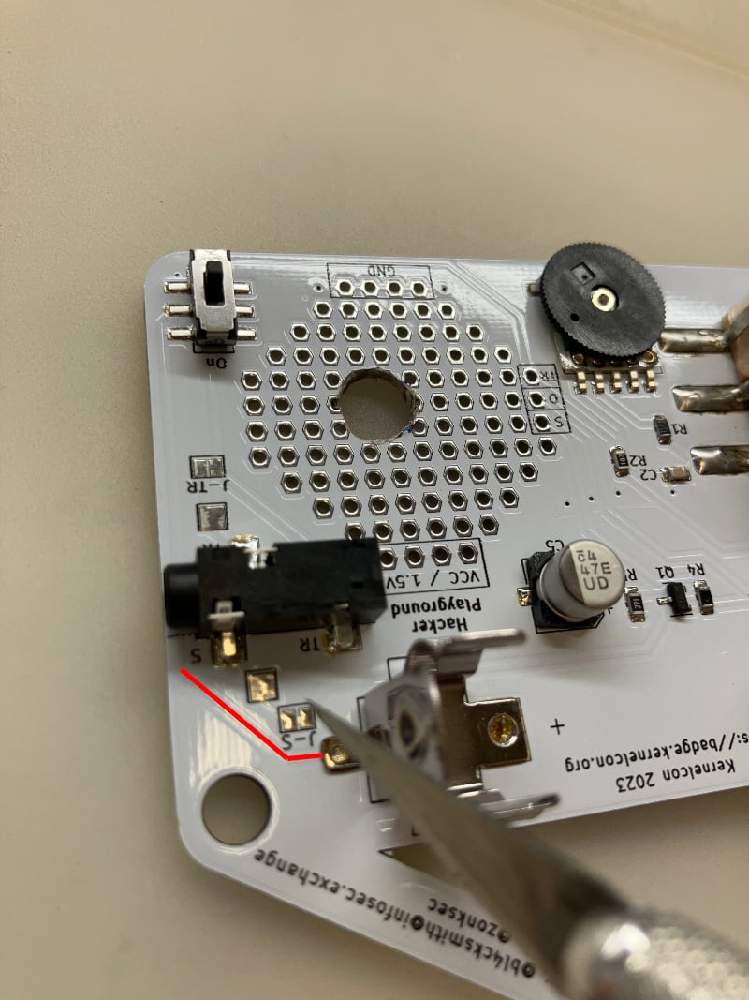

Level 3 - Amp & Volume Knob
Want the best of both worlds? Add in a transitor amp AND volume control.
Step 1
Get yourself the following components:
| Quantity | Type |
| 1 | 50K Potentiometer |
| 1 | 8.2K Resistor |
| 1 | 10nF Capacitor |
| 1 | 2N3904 Transistor |
Step 2
Look at the schematic.
Step 3
Unplug your antenna and headphones. Pull your battery out.
Step 4
Plan your component layout, especially the potentiometer. You can totally do this if you want:
But it looks a bit like an udder hanging off your badge. Maybe instead you'd like to drill and do a panel mount:
Much cooler, and you get to use a power tool in the process.
The next thing you're going to do is to break any litle metal tabs off the front of the potentiometer. These tabs are meant for panel mounting, but in our design we don't have a place for them. This is a hack. Grab a pair of needle nose pliers and break them off. If you don't, the potentiometer will not sit flush on the PCB.
Figure out where you can put the thing. You want to leave some space for the other components. You also want to avoid contact with other components or covering up the solder pads you'll be working with.
Flip the potentiometer over and mark around the shaft. The marked circle will be where you drill.
Finally, drill the hole that the potentiometer will go through. You will need a drill bit that is a slightly larger diameter than the shaft of the potentiometer.
Step 5
Get an X-acto knife and cut through the middle of the J-TR solder jumper. There's a small trace connecting the two pads. It's a bit difficult to cut and you may need to apply some pressure while cutting. Be mindful of your fingers.
Also cut the J-S solder jumper. It helps to rotate the board when doing this one.

Grab a multimeter and set it for continuity (Ohms)... The little greek Omega symbol. Put a probe on each side of the J-S solder pad.